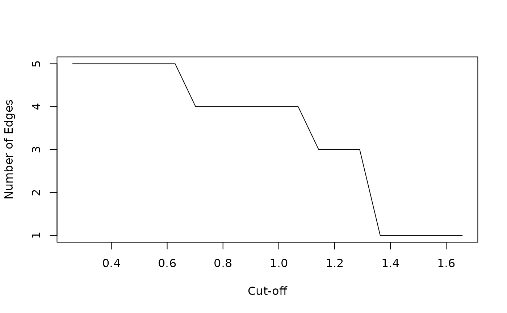

Comprehensive Cut-off Sensitivity Analysis
Source:R/cutoff_sensitivity_strength.R
cutoff_sensitivity_analysis.RdPerforms a systematic sensitivity analysis of the cut-off parameter, evaluating strength-based metrics across a range of cut-off values.
Usage
cutoff_sensitivity_analysis(
mx,
cutoff_range = NULL,
n_points = 50,
small.cell.reduction = 0,
symmetric = TRUE,
verbose = TRUE
)Arguments
- mx
Mobility matrix with marginals
- cutoff_range
Numeric vector of cut-off values to test. If NULL, automatically determined from RR distribution
- n_points
Number of points to evaluate if cutoff_range is NULL
- small.cell.reduction
Small cell adjustment parameter
- symmetric
Whether to symmetrize the RR matrix
- verbose
Logical, whether to show progress
Examples
# Generate synthetic mobility data
data <- generate_mobility_data(n_classes = 4, seed = 123)
# Run sensitivity analysis
sensitivity <- cutoff_sensitivity_analysis(data, n_points = 20, verbose = FALSE)
# View results
head(sensitivity)
#> Cut-off Sensitivity Analysis
#> ============================
#> Cut-off range: 0.26 to 0.63
#> Number of points evaluated: 6
#>
#> Key metrics across cut-off range:
#> cutoff n_edges mean_strength strength_ratio modularity
#> 0.261 5 3.04 0.736 1.67e-16
#> 0.335 5 3.04 0.736 1.67e-16
#> 0.408 5 3.04 0.736 1.67e-16
#> 0.482 5 3.04 0.736 1.67e-16
#> 0.555 5 3.04 0.736 1.67e-16
#> 0.629 5 3.04 0.736 1.67e-16
# Plot key metrics (requires ggplot2)
if (require(ggplot2, quietly = TRUE)) {
library(ggplot2)
plot(sensitivity$cutoff, sensitivity$n_edges, type = "l",
xlab = "Cut-off", ylab = "Number of Edges")
}
